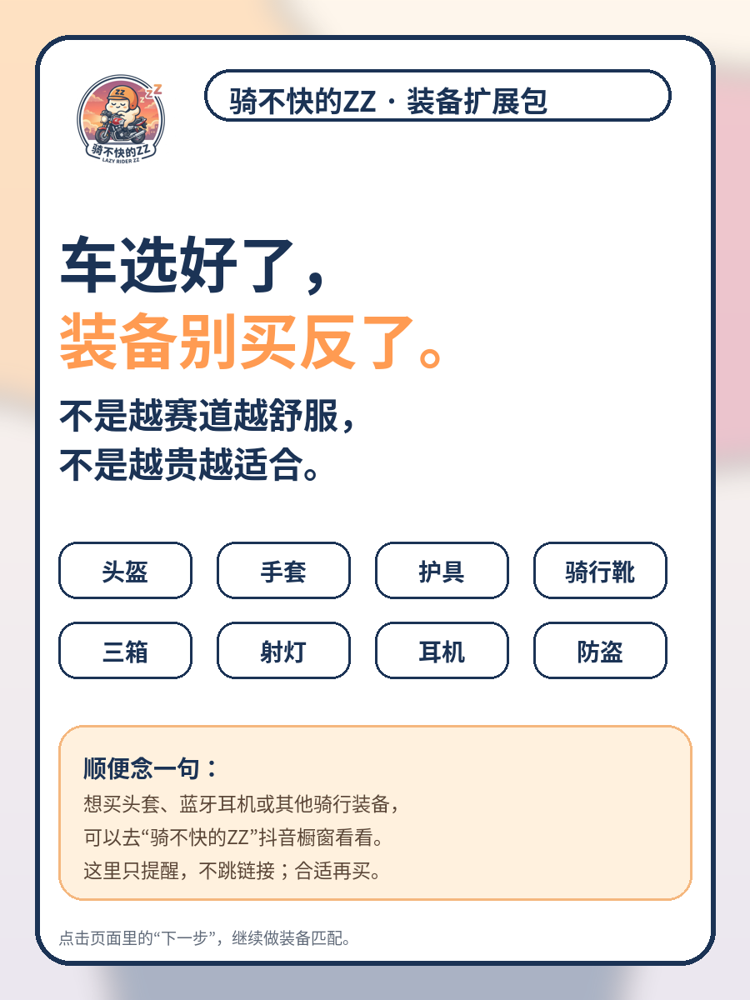
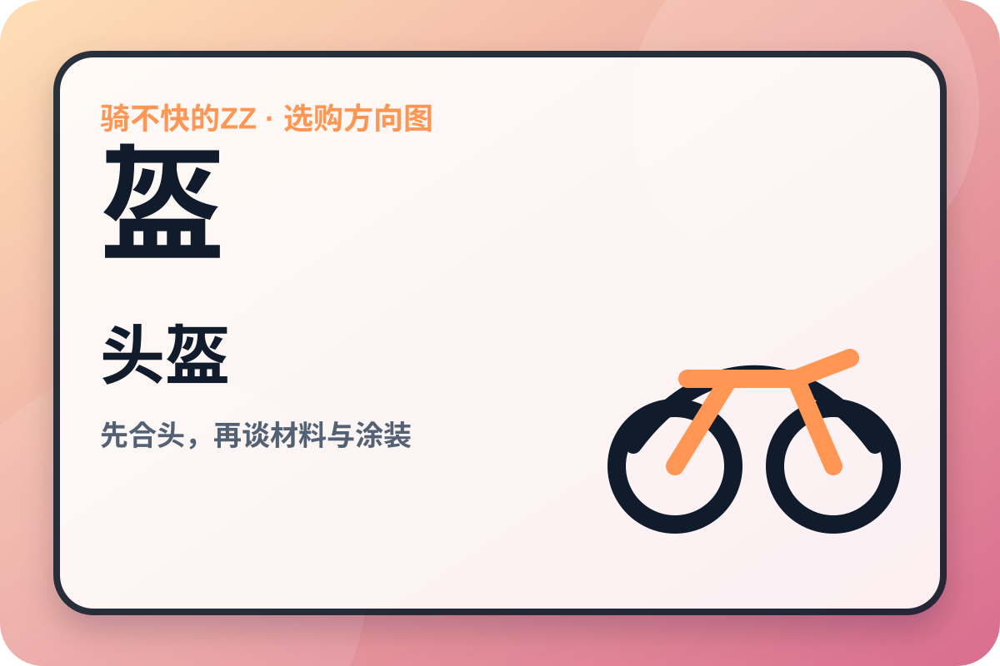

一次只解决一个问题
今天先解决一件事。
选车、头盔或装备，都可以单独开始。
选车就完成 12 道问题；挑装备就直接进入对应类别。一次只处理一项，结果会讲清推荐方向、需要接受的取舍，以及下一步该怎么比较。
一次只测一项给出清晰建议随时返回重选答案仅存本机
不收手机号，也不上传答案。进度只保存在当前浏览器；按 U 可快速打开装备选择。
第 1 题核心用途
8%
数字键选择 · Enter继续
你的选车建议
均衡街车型
78方向清晰度
选车测试已完成
想继续看头盔或其他装备，返回首页再选一项即可。
你的选车结果已经保留在当前浏览器，后续测试装备不会覆盖它。
01
优先试坐这些方向
先用这些方向缩小范围，再去线下试坐和核对实车。
需要权衡的条件
这些条件可能无法同时满足
暂不建议
以下方向与当前需求不太匹配
02
不同车型方向的相对倾向
条形只用于本站规则内比较，不是概率或安全评分；最终还要靠试坐确认。
方便保存或分享
你的选车总结

开始前确认
开始前，先确认一件事
这次只测试你选择的这一项，完成后就能查看建议。
装备选择
先从你最想解决的装备开始。
先从你最想解决的装备开始。
每个类别单独测试，其他需求随时再回来补。
选择后只回答这一类真正相关的问题；完成后会给出建议、取舍和可继续浏览的完整资料库。
头盔 · 你的建议
需求与取舍
结果会说明推荐方向、使用感和主要取舍。
下方“高/中/低”只表示当前答案下的规则权重，用来比较不同取向，不代表认证等级、碰撞测试或实验室分数。

类别示意图 · 不是具体型号实物
先按方向筛选，再到平台核对
预算建议
低价风险提醒
图片只帮助理解方向；购买前请核对结构、尺码、版本和多来源公开评价。
品牌 / 产品方向
复制搜索词后到平台比价
平台入口用于搜索和比价，不代表实时最低价或购买背书。价格、库存、版本、认证和国内渠道状态都要在购买前再次核验。
优先候选
从最匹配开始，比较符合核心筛选条件的可核验候选。
系统优先使用中文官方/旗舰店的具体型号资料；没有时只展示“国内购买待核验”的选型参考，不会凑数或把资料页写成现货。
价格、库存和版本会变化。页面展示的是候选方向与公开资料，不把单个平台榜单当作全市场销量。
中文来源候选
先从可核验的中文官方/旗舰店型号资料开始
这里只展示能核验到中文官方或旗舰店具体型号资料的候选，不是完整目录，也不代表实时库存或销量名次；完整资料库可在下方按类型、用途和品牌筛选。
品牌 → 产品线 → 型号资料库
按类型、用途和品牌浏览完整目录
资料库会把中文公开目录线索、来源可核验候选和原有推荐候选分开标注；具体版本、尺码、认证和库存仍需要购买前复核。
“资料库条目”用于查看品牌、系列和型号范围，不自动参加推荐；“中文官方型号资料”必须带具体官方或旗舰店型号页，仍不等于此刻有货，也不等于某个配色/尺码已经完成认证核验。
日常使用会有哪些感受
兼顾风格，同时保留实用性
购买渠道提醒
需要购买时，再去正规渠道比较
方便保存或分享